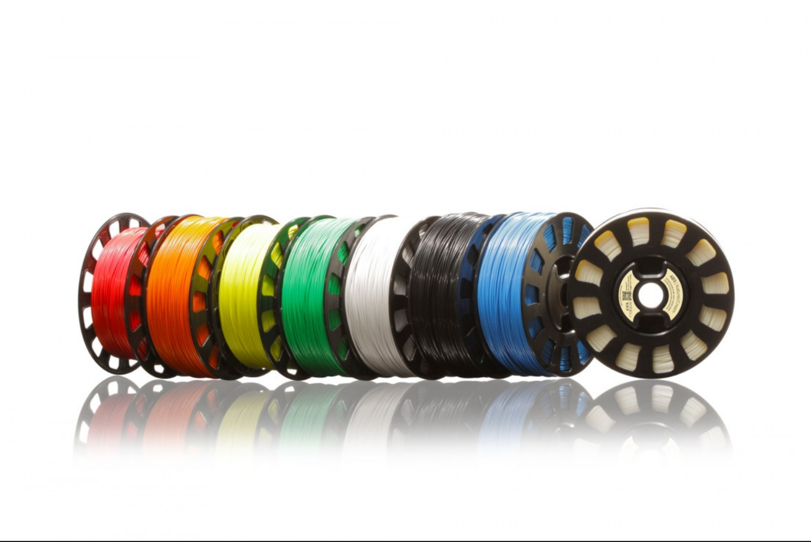

{% include JB/setup %}

<div class="justify">
<h4>Liebeliebeliebe Freund*innen und Unterstützer*innen,</h4>
<p>Weihnachten steht vor der Tür, allgegenwärtig muss man sich bald in den einschlägigen Büros dieser Stadt Glühwein in die Birne kippen, Grünkohl wettessen, und beim Spekulatius bingen in Stressschweiss ausbrechen ob der noch zu bastelnden Geschenke und der anstehenden 34C3 Assembly - Ihr kennt das.</p>
<p>Die Heart of Code hat dieses Jahr viele spannende aufregende spaßige tolle Dinge erlebt und ins Rollen gebracht, und dafür wollten wir uns jetzt mal hart Gönnen und endlich die 3D Druckerin unserer Träume in unsere heiligen Baumschiffhallen stellen.</p>

<h4>Dafür brauchen wir eure Dineros!</h4>
<p>Bis zum 24.12. sammel wir Spenden und würden uns über eure Unterstützung wahnsinnig freuen!</p>
<div class="imgblock">



</div>
<h4>Spendenziele:</h4>
<ul>
  <li>1. 3D Druckerin unserer Träume, PRUSA i3 MK3 769€</li>
  <li>2. Filamente in vielen bunten Farben 150€</li>
  <li>3. Lötstation von Weller 340€</li>
</ul>

<p>Ihr könnt eure Spenden hier bei betterplace abgeben, per Post an Heart of Code e.V., Skalitzer Str. 100 10997 Berlin schicken, oder im Baumschiff vorbeibringen.</p>

<p>Es winken der freudige Glanz in den Augen vieler Generationen von HOC Bastlerinnen und ewiger Dank. Spender*innen mit großem Portemonai (ab 42€) können sich zudem über Plastik-Klumpen am Baum freuen: selbstgedruckter Christbaumschmuck der besonderen Art.</p>

<p>Wir sind ein gemeinnütziger Verein (mündliche Zusage vom Finanzamt), und haben hoffentlich bis Weihnachten auch den entsprechenden Wisch um das  nachzuweisen. Ihr könnt eure mildtätigen Gaben dann also gerne von der Steuer absetzen. Gebt es nicht dem Staat für teure Dienstwagen, gebt es besser uns!</p>
</div>
